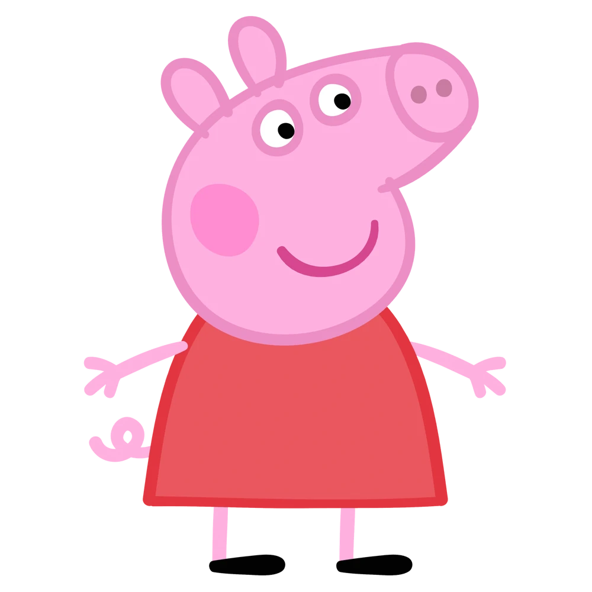
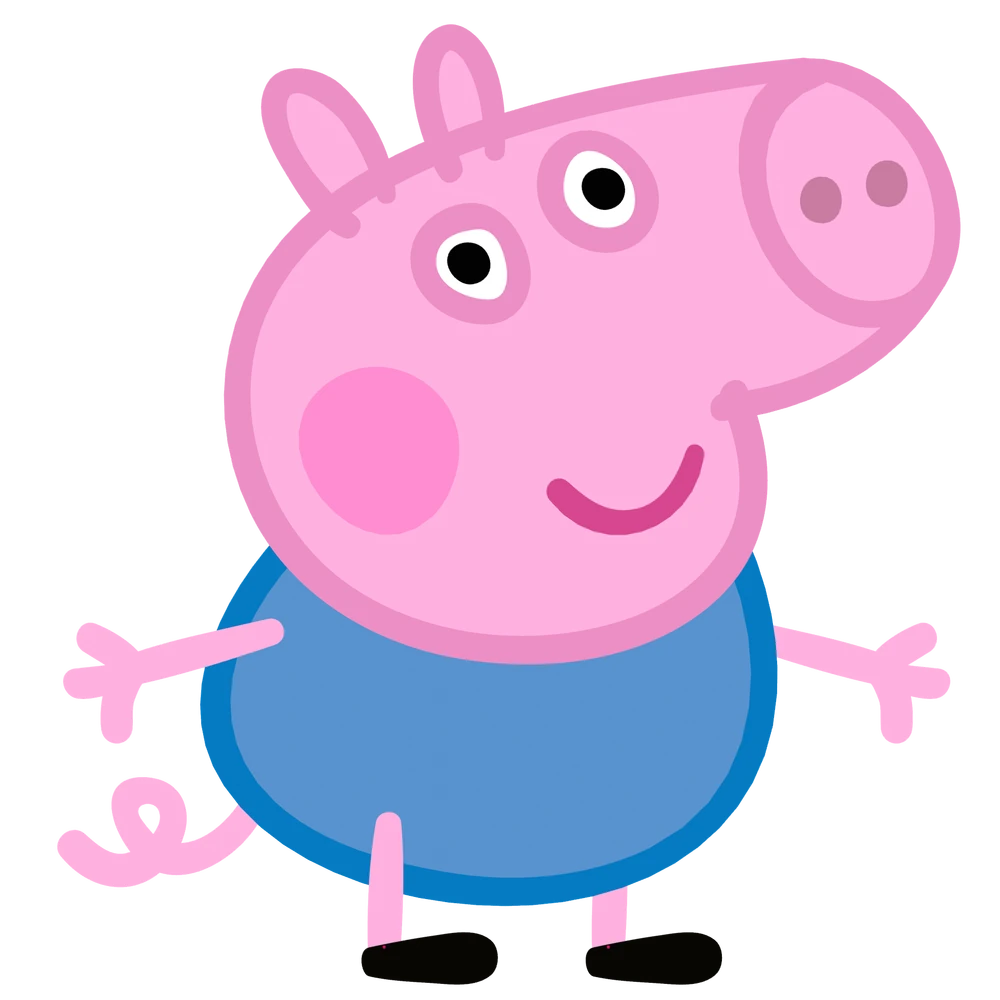
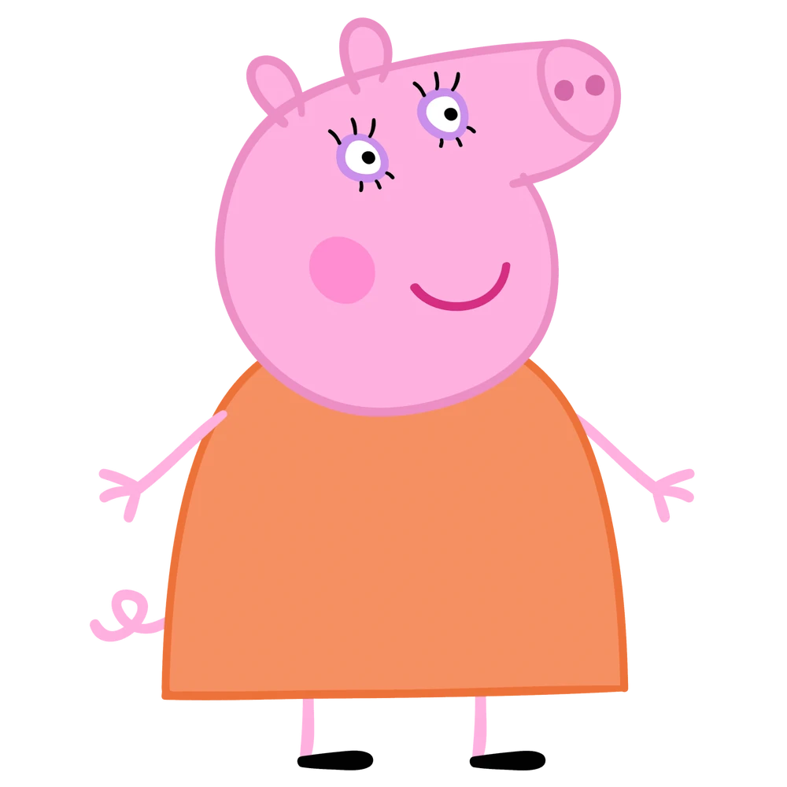
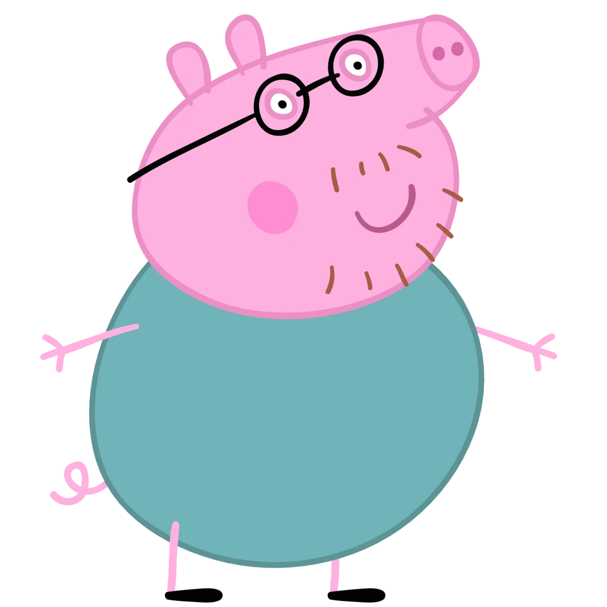

Peppa Pig is an animated children's series that premiered in 2004, featuring the adventures of Peppa, an exuberant pig who lives with her parents and brother George. The series explores everyday activities and playful antics, characterized by Peppa's love for jumping in mud puddles and making snorting noises.
Work Cited: Garcia, Bella. “Peppa Pig.” ScreenRant, 27 Feb. 2025, screenrant.com/db/tv-show/peppa-pig/. Accessed 29 Apr. 2025.
I enjoy the TV series "Peppa Pig" because the characters send out joy and bring a sense of happiness to the show. The cheerful and lovable personalities of the characters create a delightful and engaging experience for both children and adults. My favorite aspect is how the characters' joyful traits contribute positively to the overall atmosphere of the series.
This content was created with the help of A.I.

